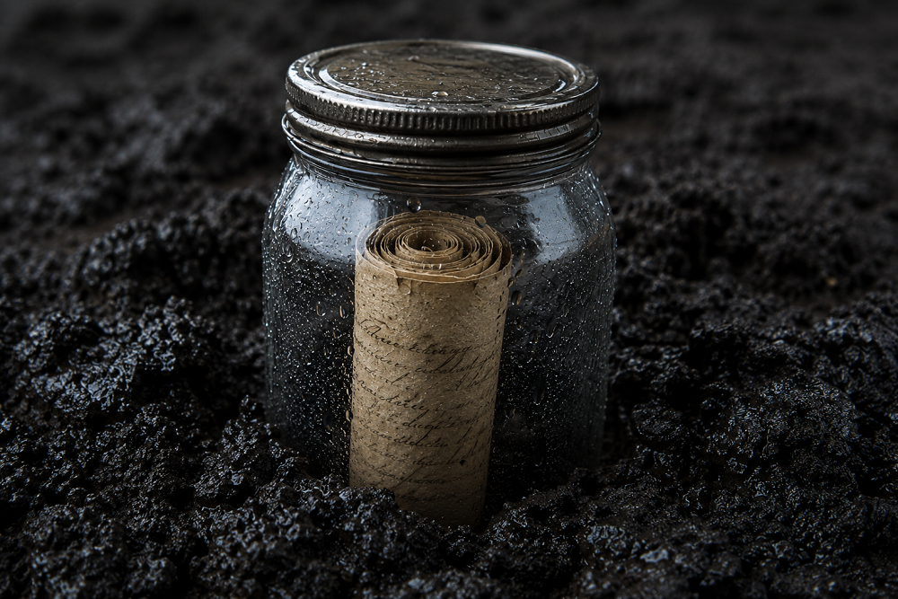

Inicio > Crónicas de un biblio-naturalista > Biomímesis en acción (03)
Biomímesis en acción (03)
Lo que el tremedal se niega a pudrir
Turberas y descomposición ralentizada
La ficción de la preservación activa
Muchos sistemas de conocimiento consideran que la preservación es, ante todo, una forma de cuidado. Alguien vigila la colección, repara los archivos, actualiza la plataforma, migra la base de datos, renueva licencias, responde solicitudes y mantiene el desorden a raya.
Esto no es necesariamente falso. La preservación suele requerir trabajo, dinero, habilidad, atención y responsabilidad. Sin todo eso, los archivos, los repositorios, las bases de datos y los proyectos comunitarios de memoria pueden desaparecer muy rápidamente.
Pero la preservación no siempre implica un cuidado activo. A veces las cosas sobreviven porque las condiciones que las rodean ralentizan el deterioro.
Algunos materiales perduran porque el oxígeno es limitado, la luz queda bloqueada, el movimiento del agua se reduce, la temperatura permanece baja, la circulación se restringe o la manipulación se evita. El sistema no preserva haciendo más, sino impidiendo que ciertos procesos hagan lo que normalmente hacen.
Esto importa para los sistemas frágiles de conocimiento, que a menudo no pueden depender de personal permanente, presupuestos, apoyo técnico o protección institucional. Si la preservación se imagina únicamente como intervención continua, entonces esos sistemas están condenados desde el principio. Sin embargo, algunas formas de supervivencia dependen menos de la acción constante que de una reducción cuidadosa de la exposición.
Las turberas visibilizan este problema con una fuerza inusual.
Un tremedal no preserva porque cuide amorosamente aquello que cae en él. Preserva porque se niega a la degradación ordinaria.
Cuando la putrefacción se ralentiza
Las turberas son tremedales donde la materia vegetal muerta se acumula más rápido de lo que llega a descomponerse por completo. Las plantas mueren, las hojas caen, los musgos crecen sobre musgos más antiguos y la materia orgánica entra en el suelo. Pero la descomposición no avanza a su velocidad ordinaria.
El suelo permanece saturado de agua. El oxígeno se vuelve escaso. La actividad microbiana se inhibe. La acidez, las bajas temperaturas y la química de plantas como los musgos Sphagnum pueden ralentizar aún más la descomposición. El resultado es la turba: no vida intacta, no almacenamiento perfecto, sino incompletud acumulada.
El tremedal no derrota a la descomposición. Pero modifica de manera significativa las condiciones bajo las cuales esa descomposición puede ocurrir.
Por eso las turberas son útiles contra las metáforas archivísticas ingenuas. No nos dicen que la naturaleza almacena perfectamente. Nos dicen algo más frío y más preciso: algunas cosas duran porque a las fuerzas que las consumirían se les niega su entorno habitual.
Para los sistemas frágiles de conocimiento, esto ofrece una aguda provocación. Una colección puede sobrevivir no porque sea activada, exhibida, digitalizada, circulada, citada o actualizada constantemente, sino porque ciertas formas de exposición han sido reducidas. La pregunta no es solo qué cuidado puede brindarse. También es qué daño puede demorarse.
El archivo como problema de oxígeno
En una turbera, el oxígeno no es algo malo. Es necesario para muchas formas de vida. Pero cuando el oxígeno entra en la turba, la descomposición se acelera. El mismo elemento que sostiene un tipo de actividad puede destruir otra forma de persistencia.
Los sistemas de conocimiento tienen sus propias versiones del oxígeno.
El acceso puede ser oxígeno. La visibilidad puede ser oxígeno. La digitalización puede ser oxígeno. La estandarización puede ser oxígeno. La publicación puede ser oxígeno. La publicidad puede ser oxígeno. Cada una puede sostener reconocimiento, circulación y uso. Cada una también puede acelerar el daño cuando se introduce sin restricción.
Una colección que se vuelve visible demasiado rápido puede ser extraída, malinterpretada, comercializada, atacada o despojada de contexto. Una base de datos abierta sin revisión ética puede exponer información restringida. Grabaciones subidas sin control comunitario pueden llegar a públicos para los cuales nunca estuvieron destinadas. Una clasificación local forzada dentro de un vocabulario estándar puede volverse buscable y menos verdadera.
El problema no es el acceso en sí mismo. Es la exposición incondicional.
Los archivos suelen heredar un vocabulario moral en el cual la apertura aparece como automáticamente buena y la invisibilidad como automáticamente sospechosa. Hay razones para esa sospecha. Los archivos cerrados pueden proteger al poder. El acceso restringido puede ocultar robo, violencia, negligencia o control burocrático. El silencio puede ser un arma.
Pero la fantasía opuesta también es peligrosa. No todo lo expuesto queda liberado. No todo lo que circula queda protegido. No toda apertura es un acto de cuidado.
El tremedal complica esa idea romántica de apertura. Sugiere que la supervivencia a veces depende de limitar el contacto con las mismas fuerzas que hacen posible la actividad.
Preservación por rechazo
Preservar mediante inhibición es decidir que algunos procesos no deberían avanzar libremente.
Esto puede significar rechazar una digitalización prematura, el acceso público total, una plataforma que exige simplificación, campos de metadatos que distorsionan categorías locales, la transferencia institucional cuando esa transferencia separaría los materiales de sus relaciones de custodia, o la exigencia de que todo lo valioso se vuelva visible para poder ser reconocido como valioso.
El rechazo suele confundirse con ausencia. Una colección no está en línea, por lo tanto no está pasando nada con ella. Un registro está cerrado, por lo tanto se está reteniendo conocimiento. Un proyecto no publica, por lo tanto ha fracasado.
A veces ese juicio es correcto. A veces el silencio oculta negligencia, pereza, miedo o control institucional.
Pero el rechazo también puede ser un acto de preservación.
Una turbera preserva al rechazar el drenaje y al rechazar la aireación. Su poder reside no solo en lo que contiene, sino en lo que impide. El tremedal es una infraestructura de demora.
Para los sistemas de conocimiento, este rechazo debe rendir cuentas. Un archivo cerrado no debería estar simplemente cerrado. Una colección restringida debería explicar la restricción. Un archivo dormido debería documentar el camino de un posible retorno. Un conjunto de datos no público debería aclarar quién puede decidir su futuro. La inhibición sin explicación se convierte en opacidad. La opacidad sin responsabilidad se convierte en poder.
El tremedal enseña inhibición, no el secreto como virtud.
Lo que la lentitud hace posible
La descomposición ralentizada modifica el tiempo. Permite que materiales de distintas estaciones, años y siglos se acumule en relación mutua. Una turbera no es un estante. Es una línea profunda de finales demorados.
Este tipo de lentitud importa para los sistemas de conocimiento dañados por la aceleración forzada. Se espera que muchos proyectos frágiles recojan rápido, procesen rápido, publiquen rápido, demuestren impacto rápido y se vuelvan legibles para los financiadores antes de que sus relaciones internas estén estables.
Ocurre que esa aceleración puede pudrir un proyecto desde adentro.
Un archivo comunitario puede necesitar tiempo antes de proceder a la descripción; los testimonios pueden necesitar revisión antes de que circulen; la documentación lingüística puede requerir decisiones locales antes de su depósito público. Las colecciones sensibles suelen exigir una secuencia más lenta en conjunto: consentimiento, traducción, desacuerdo, duelo y, a veces, silencio.
La lentitud no es ética, automáticamente. Las instituciones pueden usar la demora para agotar a las comunidades, evitar decisiones o permitir que la descripción se convierta en aplazamiento permanente. La distinción no está entre lo rápido y lo lento, sino entre la demora que abandona la responsabilidad y la demora que protege las condiciones de una relación futura.
La preservación por inhibición se pregunta qué procesos deberían ralentizarse para que el sistema no se consuma a sí mismo. Se pregunta si el acceso, la migración, la publicación, la interpretación o la integración institucional están ocurriendo a una velocidad que el material pueda sobrevivir.
A veces el acto más responsable no es acelerar el archivo, sino impedir que sea metabolizado demasiado rápido por el mundo que lo rodea.
El peligro del drenaje
Una turbera preserva solo bajo ciertas condiciones. Drénala, baja el nivel freático, expón la turba al aire, y el material antiguo empieza a degradarse con mayor rapidez. Lo que fue almacenado mediante inhibición puede liberarse mediante perturbación.
Esta es una de las lecciones más fuertes para los sistemas frágiles de conocimiento: las condiciones de preservación no son contenedores neutrales. Son límites activos. Si se cambian las restricciones, el material también puede cambiar.
Un archivo pequeño puede sobrevivir porque permanece local, discreto y comprendido a través de relaciones personales. Una vez transferido a una institución grande, puede ganar almacenamiento y perder contexto. Una colección puede sobrevivir porque solo personas de confianza saben cómo interpretarla. Una vez extraída hacia una base de datos pública, puede ganar visibilidad y perder protección. Una terminología local puede sobrevivir dentro de la práctica. Una vez forzada dentro de categorías estándar, puede volverse administrativamente útil y dañarse conceptualmente.
El drenaje suele llegar como mejora. Puede llegar como digitalización, profesionalización, integración, modernización, interoperabilidad, extensión, impacto, innovación, acceso o rescate. Estas palabras no son enemigas: muchas nombran actividades sumamente necesarias. Pero se vuelven peligrosas cuando eliminan las condiciones que permitieron que un sistema frágil persistiera.
El peligro no es la intervención en sí misma. Es la intervención que no entiende por qué algo sobrevivió en primer lugar.
Antes de modificar un entorno de preservación, hay que preguntar qué ha estado haciendo ese entorno. ¿La baja visibilidad redujo el riesgo político? ¿La custodia local protegió relaciones que la custodia institucional cortaría? ¿La circulación restringida impidió la extracción? ¿La simplicidad técnica hizo posible la recuperación? ¿La informalidad preservó significados que la descripción formal aplanaría?
Un tremedal no puede ser drenado y seguir preservando como un tremedal. Un sistema frágil de conocimiento no siempre puede ser abierto, estandarizado, acelerado, reubicado y profesionalizado sin perder las condiciones de su supervivencia.
Lo que el tremedal no resuelve
El tremedal no es un héroe moral, un archivo amable ni un bibliotecario natural. Preserva dificultando la descomposición ordinaria, y esa preservación es parcial, selectiva y transformadora. Lo que sale de un tremedal no es lo que entró en él. Ha sido retenido, pero también alterado.
La preservación por inhibición puede convertirse fácilmente en una excusa para la negligencia. Dejar el archivo cerrado, la colección sin describir, la comunidad sin apoyo, los archivos fuera de línea y los materiales en cajas, y llamar al resultado "protección".
Eso sería una mentira peligrosa.
La inhibición no es cuidado salvo que esté diseñada, sea explicada, rinda cuentas y sea reversible cuando corresponda. Un cuarto oscuro no es preservación si nadie sabe qué hay dentro. Una carpeta cerrada no es ética si ninguna autoridad comunitaria dio forma a la restricción. Una base de datos dormida no está segura si nadie puede recuperarla. El silencio no siempre es respeto. A veces el silencio es donde la pérdida se maquilla de corrección.
El tremedal también nos recuerda que la preservación tiene costos. Una colección mantenida fuera de circulación puede sobrevivir materialmente pero perder presencia social. Un archivo restringido puede proteger conocimiento sensible pero reducir oportunidades de transmisión. Un proceso lento puede preservar el consentimiento pero perder impulso político. Un sistema local puede evitar la extracción pero permanecer vulnerable al fuego, al desalojo, a la muerte o a la pobreza.
La meta, entonces, no es preferir el cierre al acceso, o la inhibición al cuidado. Es entender la preservación como un diseño de condiciones.
Algunos sistemas necesitan actividad. Algunos necesitan lateancia, o dispersión, o inhibición. Algunos necesitan abrirse cuidadosamente. Y algunos necesitan permanecer cerrados hasta que abrirlos ya no sea dañino.
El tremedal no proporciona una respuesta universal. Proporciona una pregunta difícil: ¿qué debe impedirse para que algo frágil pueda continuar?
Lo que el tremedal se niega a pudrir
Las turberas enseñan que la preservación no siempre es mantenimiento. A veces es rechazo controlado: del oxígeno, de la velocidad, de la exposición, del apetito ordinario de la descomposición.
Para los sistemas frágiles de conocimiento, esto no significa que los archivos deban convertirse en pantanos de inaccesibilidad. Significa que la preservación no puede reducirse a activación, digitalización, visibilidad, circulación o cuidado institucional continuo. Algunos materiales sobreviven porque se los mantiene alejados de ciertos procesos. Algunas relaciones persisten porque no son expuestas a todo público. Algunos archivos perduran porque sus condiciones ralentizan las fuerzas que de otro modo los consumirían.
La pregunta no es si el conocimiento debería respirar. Debe respirar, pero no siempre en todas partes, no siempre a la misma velocidad, y no siempre a través de los canales exigidos por instituciones, plataformas, financiadores o públicos.
Una turbera preserva dificultando la descomposición. Un archivo frágil puede necesitar hacer algo similar: no congelarse para siempre, no rechazar el uso como principio, no confundir el silencio con la virtud, sino diseñar formas de demora, restricción y exposición reducida que impidan que materiales vulnerables sean destruidos por una circulación prematura.
La continuidad no siempre depende del cuidado como actividad constante. A veces depende del coraje de inhibir aquello que, de otro modo, avanzaría con demasiada facilidad.
Lo que el tremedal se niega a entregar a la podredumbre no es solo materia muerta. Es la fantasía de que todo lo preservado debe estar constantemente disponible, constantemente en movimiento, constantemente expuesto y constantemente despierto.